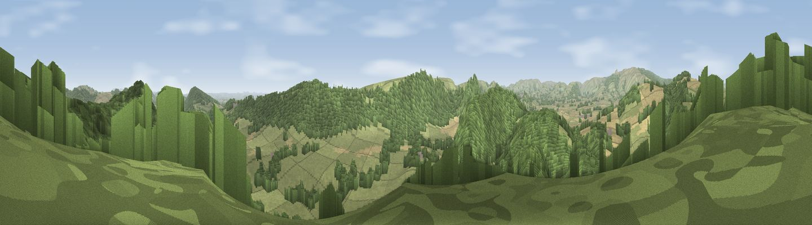

Viewpoint near Titley
#2468 in England · top 4% of its area beats it · near TitleyWhere it is
The exact computed spot (SO 34338 62425). Click the marker for map links.
The view, rendered

A 360° render of this exact spot computed from the terrain model, tree cover and land cover — summer colours, afternoon light, calibrated against photographs of famous viewpoints. Real trees, hedges and buildings will differ in detail.
The panorama
Grey silhouette: terrain skyline in each direction (720 bearings, Earth curvature and refraction included). Dashed green: skyline with trees (+15 m) and buildings (+8 m) as obstacles. Blue strip: how far the ground is visible on each bearing.
Where the view opens
Wedge length = distance to the farthest visible ground on that bearing (vegetation-aware). Rings at 10, 25 and 50 km.
What fills the view
51% grassland · 27% woodland · 21% cropland · 1% built-up
Angular shares of the visible panorama (visual magnitude), not map area. Landscape diversity 0.47 (0–1 Shannon).
Key numbers
More beautiful places nearby
The staircase of upgrades: each row has a higher view potential than everything closer. Driving times are estimates from straight-line distance, calibrated against real road routing — check an actual route before setting out.
| Place | Direction | Drive | Score |
|---|---|---|---|
| Viewpoint near Shobdon | ENE · 4 km | ~9 min | 77.9 |
| Rushock Hill | WSW · 6 km | ~13 min | 80.2 |
| Viewpoint near Leinthall Starkes | NE · 12 km | ~22 min | 80.3 |
| Gatley Hill | NE · 13 km | ~23 min | 82.6 |
| Viewpoint near Asterton | N · 27 km | ~43 min | 83.0 |
| Titterstone Clee | ENE · 29 km | ~46 min | 83.8 |
| The Lawley | NNE · 38 km | ~57 min | 85.8 |
| North Hill | ESE · 45 km | ~66 min | 86.8 |
52.25606, -2.96338 · source: screening · position refined by local search. Computed location — check access rights before visiting.